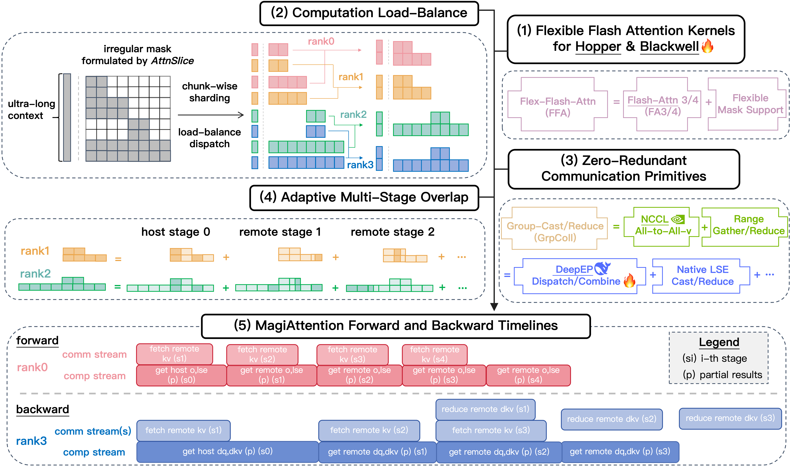
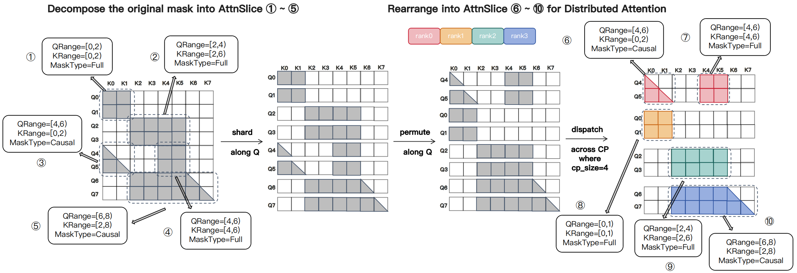
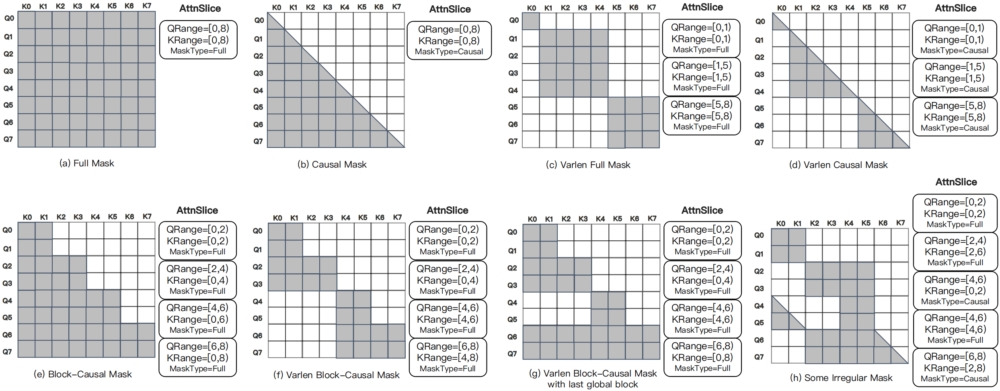
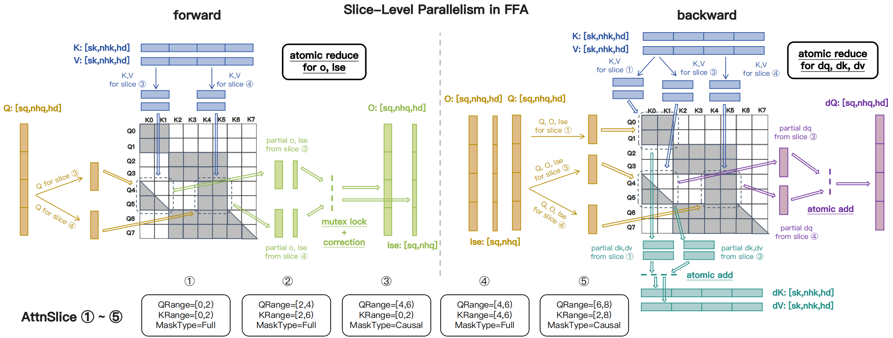
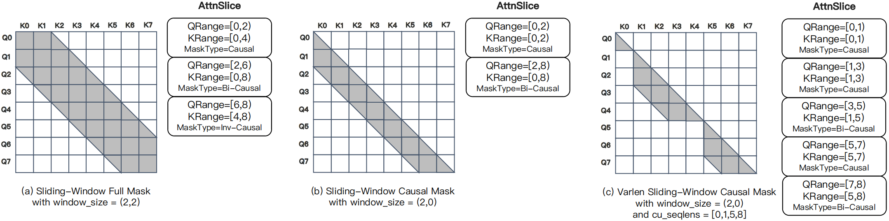
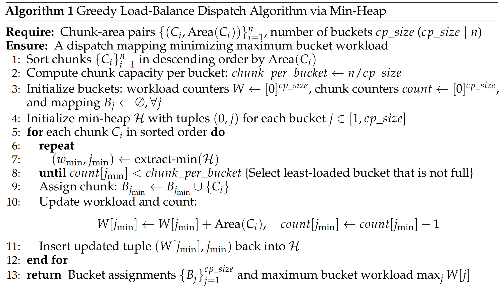
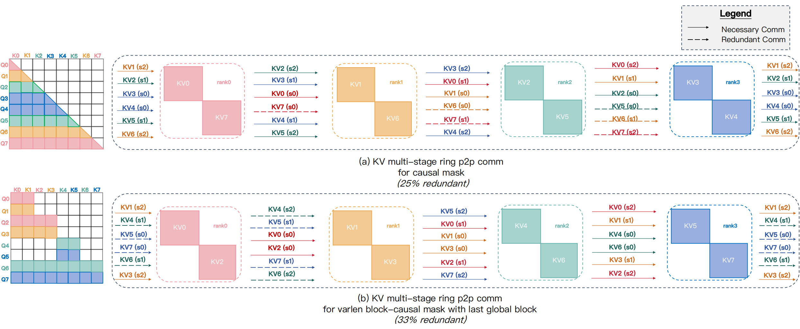
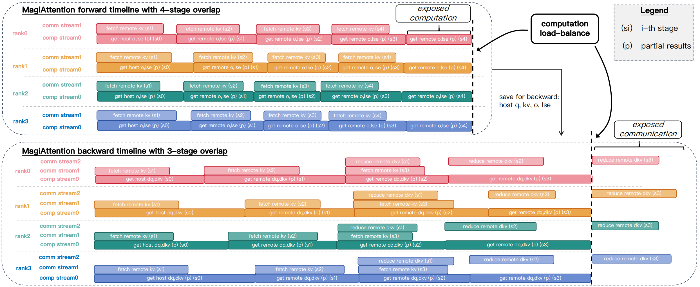
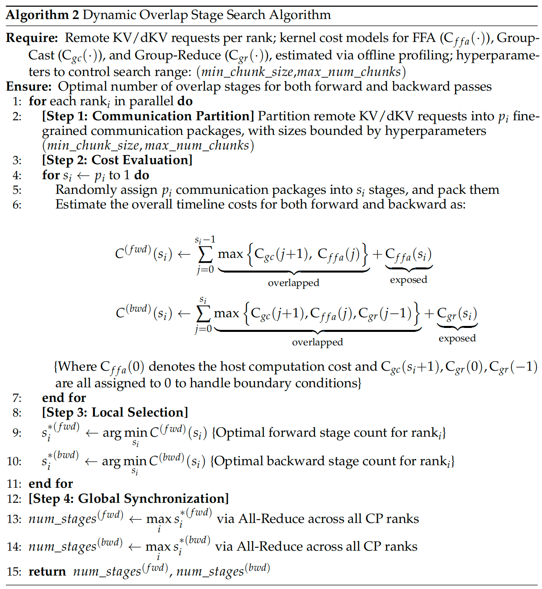

MagiAttention#
面向超长上下文、异构掩码训练的线性可扩展分布式注意力
概览#
{kind=link}

图 1 MagiAttention 概览：(1) FFA — 基于 Flash-Attention 3 的优化内核，进一步支持灵活的掩码模式；(2) dispatch solver 对超长数据进行分片并调度以实现负载均衡的计算；(3) GroupCast 和 GroupReduce 原语消除冗余通信；(4) overlap solver 自适应地划分多阶段计算/通信以实现最优重叠；(5) MagiAttention 调度的前向和反向时间线。所有组件协同工作，MagiAttention 实现了超长上下文和异构掩码训练中的线性可扩展性。#
训练大规模视频生成模型面临两个紧密耦合的挑战：(1) 超长上下文——可达数百万 token（例如 ~4M）——使得注意力在计算和内存上代价极高，(2) 高度异构的不规则注意力掩码（例如 block‑causal + Patch‑and‑Pack）打破了现有内核和分布式布局的假设，导致碎片化、负载不均衡、填充浪费和大量通信开销。
这些限制同样影响旨在支持超长历史记录和灵活掩码的（多模态）LLM，以适应涉及大规模检索和深度推理的智能体任务。因此，我们需要一种高效、掩码灵活且可扩展的分布式注意力解决方案。
为了应对这些挑战，我们提出了 MagiAttention，它以内核级灵活性瞄准这些瓶颈，同时在广泛的训练场景中实现分布式级线性可扩展性，尤其是涉及超长上下文和异构掩码的场景，如 Magi-1。
引言#
训练大规模自回归扩散视频生成模型（例如 Magi-1）带来两个紧密耦合的系统性挑战。首先，训练上下文可达数百万 token，因此朴素的二次注意力或分片不足的算法在计算和内存上都会迅速变得不可行。其次，实际的数据流水线——例如 block‑causal 注意力与 Patch‑and‑Pack (PnP) 处理 [Dehghani et al., 2023] 的组合——会产生高度异构的不规则掩码和可变序列长度，违反了标准注意力内核和分布式布局所做的假设。其综合效果是严重的碎片化、各 rank 间计算不均衡、过度填充以及大量（往往是冗余的）通信量。
已有的上下文并行方案 [Chen et al., 2024, Fang and Zhao, 2024, Gu et al., 2024, Jacobs et al., 2023, Liu et al., 2023] 部分缓解了这些问题，但引入了新的局限性：head 分片设计施加了整除性约束并降低了灵活性，ring 式 P2P 方案虽然可扩展，但在稀疏/varlen 掩码下会产生大量通信和冗余。虽然最近的工作 [Ge et al., 2025, Wang et al., 2024, Zhang et al., 2024, NVIDIA, 2025] 动态调整 CP 大小以避免对较短序列的不必要分片和冗余通信，但它们仍然会产生额外的 NCCL 缓冲区内存开销，并涉及复杂的调度来平衡负载和在不同 rank 子集之间同步。
关键在于，现有方法无法同时：(1) 为广泛的掩码模式提供统一的、可分布式化的表示，(2) 保证任意结构掩码在上下文并行 (CP) rank 间的计算均衡，(3) 消除不必要的数据传输，同时实现稳健的计算/通信重叠。
MagiAttention 通过优先考虑内核级灵活性和分布式级可扩展性来解决这些差距，这依赖于满足以下基本条件：
线性可扩展注意力内核：注意力内核的性能不应随 CP 大小增加而下降。为此，我们引入 Flex-Flash-Attention，这是 FlashAttention-3 (FA3) 的扩展，它在设计上原生考虑了分布式环境中注意力掩码分区对效率的影响。它通过定制的内核实现支持可分布式化的掩码表示，在保证可扩展性的同时适配更广泛的注意力掩码类型。
均衡的计算负载：CP rank 间的计算负载不均衡会导致不可避免的空闲气泡，阻碍可扩展性。MagiAttention 在设计上原生确保计算负载均衡，缓解此类低效问题。
通信与计算的完全重叠：如果重叠不充分，增加 CP 大小会导致 GPU 上由通信引起的空闲时间，损害可扩展性。MagiAttention 引入了新颖的零冗余通信原语以最小化通信开销，并配合自适应多阶段重叠策略来实现有效的通信-计算重叠。
通过协调掩码灵活内核、负载均衡调度器和自适应重叠的零冗余通信，MagiAttention 支持广泛的注意力模式，同时在真实的超长和异构训练负载上实现分布式级线性可扩展性。
下面，我们在相关工作中简要回顾当前的 CP 策略，在方法论中介绍关键设计，并在实验中报告验证该方法的全面实验结果。
我们在其他部分进一步阐述预备知识、扩展功能、优化技术和下一代设计，随后是未来工作部分。我们持续演进的探索旨在拓宽分布式注意力的范围并重新定义其前沿，优化其在大规模模型训练中的性能，并在未来将其扩展到推理场景。
{kind=link}
方法论#
Flex-Flash-Attention#
AttnSlice 表示#
Flash-Attention [Dao, 2023, Dao et al., 2025, Dao et al., 2022, Shah et al., 2024] 提供了高吞吐量、内存效率和对 varlen 打包输入的原生支持，使其成为大规模训练的基石。然而，其内核假设规则的掩码结构，无法高效处理不规则的、跨 rank 分布的掩码——导致碎片化、负载不均衡、过度填充和更高的通信开销——因此需要一个保持 Flash‑Attention 性能的掩码灵活内核 [Dong et al., 2024, PyTorch, n.d., Wang et al., 2025]。
因此，我们引入 Flex-Flash-Attention (FFA)，一种为分布式环境设计的内核，可灵活处理多种注意力掩码。FFA 采用可分布式化的表示方式，将不规则掩码分解为多个称为 \(\mathrm{AttnSlice}\) 的计算单元。每个 \(\mathrm{AttnSlice}\) 是一个三元组 \(\mathrm{(QRange, KRange, MaskType)}\)，表示限定在连续 2D query-key 区域内的子掩码（见下方 图 3）。
{kind=link}

图 3 不规则掩码的 \(\mathrm{AttnSlice}\) 公式化示意图。掩码被分解为多个 \(\mathrm{AttnSlice}\) 单元，使得分形模式在跨 CP rank 重新分布后可以重新表达以支持分布式注意力。注意此示意图未考虑跨 CP rank 的计算负载均衡。#
如下方 图 4 所示，该公式化表示能将广泛的注意力掩码——包括 Magi-1 中使用的 varlen block-causal 掩码——表达为多个三元组的组合。这些表示在跨 rank 分片和重排后仍然有效，使得 FFA 非常适合分布式注意力计算。
{kind=link}

图 4 使用 \(\mathrm{AttnSlice}\) 表达的掩码模式示例：(a)–(d) 为标准的 FA3 兼容模式；(e)–(h) 为超出 Flash-Attention 能力范围的不规则掩码——例如 varlen block-causal 掩码——FFA 可以无缝处理并保持与 FA3 相当的性能。#
FFA 中的 AttnSlice 级并行#
基于 Flash-Attention 3 (FA3) 内核 [Shah et al., 2024] 构建，FFA 利用 Hopper GPU 的 TMA 特性 [NVIDIA, 2024]，实现了 \(\mathrm{AttnSlice}\) 级并行和原子操作以保证正确性（如下方 图 5 所示）。FFA 在支持灵活的 \(\mathrm{AttnSlice}\) 公式化的同时，提供了与 FA3 相当的 MFU——详见注意力内核基准测试中的性能和灵活性对比。
{kind=link}

图 5 FFA 前向和反向内核示意图：数据加载、片上计算和用于 slice 级并行的原子归约。#
AttnSlice 中的基本掩码类型#
虽然大多数掩码模式可以使用常见类型 \(\lbrace\texttt{FULL}, \texttt{CAUSAL}\rbrace\) 的 \(\mathrm{AttnSlice}\) 来表达，但某些模式——例如 \(\textit{sliding-window}\)——由于需要逐行表达而变得低效。为了紧凑地表示此类模式，我们引入了两种额外的掩码类型：\(\lbrace\texttt{INV-CAUSAL}, \texttt{BI-CAUSAL}\rbrace\)。以下 图 6、图 7 和 图 8 展示了当前 \(4\) 种支持的掩码类型示例。

图 6 展示 seqlen_q == seqlen_k 下四种支持的掩码类型。注意：在此设置下，\(\texttt{BI-CAUSAL}\) 退化为仅主对角线单元有效的掩码。#

图 7 seqlen_q < seqlen_k 时四种支持的掩码类型示意图。此配置通常出现在使用 \(\texttt{INV-CAUSAL}\) 和 \(\texttt{BI-CAUSAL}\) 掩码时。#

图 8 seqlen_q > seqlen_k 时四种支持的掩码类型示意图。注意 \(\texttt{BI-CAUSAL}\) 为空且不包含有效单元。#
利用四种支持的掩码类型，我们展示了通过 \(\mathrm{AttnSlice}\) 公式化表达的常见 \(\textit{sliding-window}\) 风格掩码（见下方 图 9）。
{kind=link}

图 9 由 \(\mathrm{AttnSlice}\) 公式化的常见 \(\textit{sliding-window}\) 风格掩码模式示例。#
计算负载均衡#
Dispatch Solver#
在上下文并行训练中，跨 CP rank 的异构注意力掩码会造成计算负载不均衡。Ring-Attention（见相关工作）使用针对 causal 掩码定制的分区策略，因此无法泛化到任意模式。为此，我们提出了通用且高效的 dispatch solver，可在不同注意力类型下平衡各 CP rank 的工作负载。
具体而言，我们采用块级可排列分片：沿 query 维度将全局掩码均匀划分为多个块，每个块关联一个子掩码面积 \(\lbrace(C_i, \mathrm{Area}(C_i))\rbrace_{i=1}^n\)，其中 \(C_i\) 表示第 i 个块，\(\mathrm{Area}(C_i)\) 是其掩码面积，\(n = \frac{seqlen}{\textit{chunk\_size}}\)，而 \(\textit{chunk\_size}\) 是可调的粒度参数。
这些块被均匀分配到 \(\textit{cp\_size}\) 个桶中，使每个桶包含相同数量的块（为非注意力阶段保持 token 级均衡）。每个桶的总掩码工作量是其子掩码面积之和，记为 \(\lbrace(B_j, \mathrm{SumArea}(B_j))\rbrace_{j=1}^{\textit{cp\_size}}\)。
在此公式化下，负载均衡归结为一个组合分配问题：找到最优映射 \(f^*: \lbrace C_i\rbrace_{i=1}^n \rightarrow \lbrace B_j\rbrace_{j=1}^{\textit{cp\_size}}\)，使得每桶最大面积最小化，如下方等式 (1) 所示。
由于该问题是 NP 难的且掩码模式在微批次间变化，每次迭代精确求解不可行。因此我们使用一种实用的贪心最小堆算法（如下方 图 10 所示），运行时间为 \(O(n\log n)\)，以最小的运行时开销产生快速有效的分配。
{kind=link}

图 10 基于最小堆的贪心负载均衡调度算法#
静态注意力求解器#
在沿 seqlen 维度将张量调度为 \(n\) 个块后，全局掩码被划分为 \(n^2\) 个子掩码，每个 CP rank 分配 \(n\) 个子掩码。由于每个 rank 只能使用本地张量处理全局掩码主对角线上的一个“宿主”子掩码，剩余的 \(n\!-\!1\) 个“远程”子掩码需要通信。这产生了两个重要但非平凡的元结构：
(1)
CalcMeta：将每个子掩码编码为每个 rank（以及使用多阶段重叠时每个阶段）的 \(\mathrm{AttnSlice}\) 实例，并提供FFA内核计算所需的参数。(2)
CommMeta：描述与其他 CP 对等节点的数据交换——为FFA获取哪些输入张量以及如何归约每个 rank（以及使用多阶段重叠时每个阶段）的部分输出——生成GroupCast/GroupReduce内核通信所需的参数（详见 group collective 原语）。
为此，我们设计了 attn solver 数据结构：它消费 dispatch solver 的输出，并生成运行分布式注意力（前向和反向）所需的 CalcMeta 和 CommMeta，即每个 CP rank 和阶段上 FFA 和 GroupCast/GroupReduce 的参数束。我们首先提供了 static attn solver 实现，它在数据预处理阶段从 dispatch solver 结果中构建 CalcMeta 和 CommMeta，然后调用 overlap solver 来推导多阶段调度。
然而，此 static attn solver 基于一个较强的假设：全局掩码是静态的，即 (1) 在每个微批次的数据处理阶段已知，(2) 在所有注意力层的整个前向/反向传播过程中保持不变。它还限制在 kv-comm only 调度 下，即只允许通信 \(\mathrm{KV}\) 相关张量，而 \(\mathrm{QO}\) 相关张量保持本地——限制了调度灵活性和重叠潜力。
动态注意力求解器#
static attn solver 可以处理大多数标准训练场景，但对于动态掩码场景是有限的且次优的——例如逐层变化的混合注意力 [MiniMax et al., 2025] 或运行时确定的动态稀疏掩码 [DeepSeek-AI et al., 2025, Yuan et al., 2025]。
为了解决这个问题，我们正在开发实验性的 dynamic attn solver，它动态平衡计算（无需依赖 dispatch solver 的初始调度结果）并在通用的 scheduling with qo-comm enabled 下最小化通信，放宽当前 kv-comm only 调度 的启发式约束。然后它将能够在每个注意力层前向传播过程中以可忽略的开销即时生成 CalcMeta 和 CommMeta。
关于 dynamic attn solver 的动机、设计、实现和初步结果的更多详情，请参阅单独的博客文章。
零冗余通信原语#
Ring P2P 冗余分析#
Ring 式实现依赖于缺乏细粒度通信控制的点对点 (P2P) send/recv 原语，导致不必要的数据移动。为量化这一点，我们记录了 causal 掩码下远程 key-value (\(\mathrm{KV}\)) 请求及其梯度 (\(\mathrm{dKV}\)) 作为一个简单示例，如 图 11 所示：在前向传播中 \(\mathrm{KV}_0\) 必须通过 BroadCast 发送到所有设备，而 \(\mathrm{dKV}_0\) 需要在反向传播中通过 AllReduce 归约。然而，\(\mathrm{KV}_7\) 仅在其宿主 \(rank_7\) 本地需要，却仍在所有设备间循环传播。这种冗余的均匀分发——及其代价——在 varlen 掩码模式下更为严重。
{kind=link}

图 11 Ring P2P 中异构掩码的冗余通信示例：(a) 简单的 causal 掩码产生 25% 的冗余通信；(b) 不规则掩码，例如带有最后全局块的 varlen block-causal 掩码，冗余可超过 33%。#
Group Collective 原语#
为解决这一问题，如下方 图 12 所示，我们引入了两种通信原语：GroupCast 和 GroupReduce，它们建模低需求 \(\mathrm{KV}\) 和 \(\mathrm{dKV}\) 的通信模式。例如，在 causal 掩码中，\(\mathrm{rank}_2\) 上的 \(\mathrm{KV}_5\) 仅被 \(\{\mathrm{Q}_6,\mathrm{Q}_7\}\) 需要，应通过 GroupCast 仅发送到目标 rank \(\{\mathrm{rank}_0, \mathrm{rank}_1\}\)，而部分 \(\mathrm{dKV}_5\) 则通过 GroupReduce 相应地收集并归约回 \(\mathrm{rank}_2\)。

图 12 基于 AlltoAll-v 实现零冗余的 GroupCast/GroupReduce 原语示意图，以带有最后全局块的 varlen block-causal 掩码为例。(a) 在前向和反向传播中，GroupCast 为 \(\mathrm{KV}\) 发送/接收缓冲区构建传输表，调用 AlltoAll-v，并使用自定义 Range-Gather 内核进行预/后处理。(b) 在反向传播中，GroupReduce 通过 AlltoAll-v 聚合部分 \(\mathrm{dKV}\)，使用 Range-Gather 进行预处理，使用 Range-Scatter-Reduce 进行后处理。#
AlltoAll-v 实现#
由于现有通信内核不支持 group collective，我们在 AlltoAll-v 之上原型化了 GroupCast 和 GroupReduce，在前向和反向传播中实现了零冗余通信（见 图 12）。然而，这种方法需要额外的预/后处理：GroupCast 必须为 AlltoAll-v 重新排列输入并恢复输出（Range-Gather），GroupReduce 还需对输出执行归约（Range-Scatter-Reduce）。虽然我们使用优化的 Triton 内核实现了这些步骤，但额外开销仍然不可忽略，可能影响端到端性能。
除了额外的预/后处理 D2D 开销外，AlltoAll-v 实现的另一个隐蔽代价是它每对对等节点仅允许一个 send/recv 缓冲区对，因此不原生支持“cast”语义。因此，要将一个张量从一个 rank 发送到大小为 \(m\) 的对等节点子集，必须分配 \(m\) 个单独的发送缓冲区——每个目标一个——并逐个传输，即使数据完全相同。这种重复带来了大量通信开销，当 CP 组包含使用 RDMA 的跨节点对等节点时尤为严重，因为其带宽远低于节点内 NVLink。
原生实现#
为缓解上述 AlltoAll-v 实现的额外开销，我们受 DeepEP [Zhao et al., 2025] 启发，开发了 group collective 的原生 CUDA 内核实现。它不仅消除了预/后处理 D2D 拷贝，还通过 RDMA 传输去重优化显著提升了效率，尤其适用于跨节点和节点内对等节点的分层 CP 组。
虽然仍有进一步优化的空间，但收益在注意力基准测试中已经显而易见，尤其是在扩展分层 CP 组大小时。关于 group collective 原生实现的动机、设计、实现和实验结果的更多详情，请参阅单独的博客文章。
多阶段计算/通信重叠#
仅 KV 通信调度#
利用前述优化，我们将优化内核、负载均衡调度和零冗余原语结合起来，分别最小化通信开销和最大化计算吞吐量。现在，为实现真正的线性可扩展性，我们引入自适应多阶段计算/通信重叠策略，可有效隐藏通信延迟，并可手动或自动调优。
类似于先前的工作 [He et al., 2024, Liu et al., 2023, Zhao et al., 2023]，我们调度流水线阶段以在前向和反向传播中重叠计算和通信（见 图 13）。每个 \(\mathrm{rank}_i\) 将其远程 \(\mathrm{KV}\)/\(\mathrm{dKV}\) 交换划分为多个阶段。
{kind=link}

图 13 Magi Attention 多阶段重叠调度示意图。（a）前向传播 — 4 阶段调度，将计算（部分 \(\mathrm{O}\) 和 \(\mathrm{LSE}\)）与下一阶段 \(\mathrm{KV}\) 请求的预取重叠，隐藏除最后阶段计算外的所有通信延迟。（b）反向传播 — 3 阶段调度，将计算（部分 \(\mathrm{dQ}\)、\(\mathrm{dKV}\)）、下一阶段 \(\mathrm{KV}\) 预取和前一阶段部分 \(\mathrm{dKV}\) 归约重叠，仅暴露最后阶段的部分 \(\mathrm{dKV}\) 归约。#
在前向传播中，调度器启动 GroupCast 内核预取下一个第 \((i\!+\!1)\) 阶段的远程 \(\mathrm{KV}\)，同时异步执行当前第 \(i\) 阶段的 FFA 内核进行部分注意力计算。由于 local qkv 在初始阶段始终可用，所有通信延迟完全被隐藏，仅暴露最后远程阶段的计算。
在反向传播中，调度器预取下一个第 \((i\!+\!1)\) 阶段的 \(\mathrm{KV}\) 并调用 GroupReduce 内核归约前一个第 \((i\!-\!1)\) 阶段的部分 \(\mathrm{dKV}\)，然后执行当前第 \(i\) 阶段的注意力计算。这种重叠隐藏了跨阶段的通信延迟，仅暴露最后阶段的部分 \(\mathrm{dKV}\) 归约。
启用 QO 通信的调度#
最初，我们遵循传统启发式，仅通信 \(\mathrm{KV}\) 相关张量，而 \(\mathrm{QO}\) 相关张量保持本地，这是先前工作 [Fang and Zhao, 2024, Liu et al., 2023] 中的常见做法。这简化了调度并通常减少通信，尤其在 GQA 设置下 \(\mathrm{KV}\) 通常比 \(\mathrm{QO}\) 体积更小。
然而，这种启发式并非根本性的，对于某些掩码模式和训练设置可能是次优的。因此我们支持更通用的调度器，允许在有利时通信 \(\mathrm{QO}\)。在前向传播中，调度器除了预取远程 \(\mathrm{KV}\) 外，还会预取下一阶段的远程 \(\mathrm{Q}\)，将两者与当前 FFA 计算重叠。与仅 \(\mathrm{KV}\) 调度的主要区别在于，我们还需要对前一阶段的部分 \(\mathrm{O,LSE}\) 应用 \(\mathrm{LSE}\) 归约，同时与当前阶段的计算重叠。
在反向传播中，调度器将预取下一阶段的远程 \(\mathrm{KV}\) 和 \(\mathrm{Q,O,dO,LSE}\)，同时并发对前一阶段的部分 \(\mathrm{dKV}\) 和 \(\mathrm{dQ}\) 进行求和归约，与当前 FFA 反向计算重叠。
虽然调度器本身已经支持，但启用此模式还需要 dynamic attn solver 为 FFA 和 group-collective 内核生成相应的 CalcMeta 和 CommMeta，这正在积极开发中（见 Dynamic Attn Solver）。我们将尽快发布并持续优化以获得更好的性能。
如何确保内核实际重叠#
虽然 CPU 调度器控制内核启动顺序以促进重叠，但 GPU Hyper-Q 驱动 [Bradley, 2013] 最终以非确定性方式决定实际执行顺序，同时还受瞬态 GPU 资源占用的影响。因此，确保计算和通信内核之间的可靠重叠并非易事。
关于实用技术和我们的具体新方法，请参阅单独的博客文章。
动态重叠阶段搜索#
警告
在实践中，\(\textit{overlap\_degree}\) 通常在 \(\{1,2,3,4\}\) 中手动调优。overlap solver 的自动搜索往往表现不佳，因为它需要准确估计计算通信比。因此我们建议先手动调优几次迭代以确定合适的 \(\textit{overlap\_degree}\)，再启用自动搜索，我们将继续改进以提高鲁棒性。
为控制重叠粒度，我们引入可调超参数 \(\textit{overlap\_degree}\)，指示要划分的远程阶段数，它适应不同训练设置、微批次以及前向和反向传播之间变化的计算通信比。用户可以在自己的训练设置上手动设定。或者，我们提供了一种算法，由 overlap solver 使用以下 图 14 中描述的动态搜索自动选择。
{kind=link}

图 14 动态重叠阶段搜索算法#
实验#
注意力基准测试#
为评估 FFA 内核的性能和灵活性，并验证 MagiAttention 在超长、异构掩码训练中的分布式可扩展性，我们在现代 GPU（如 Hopper 和 Blackwell）上对内核和分布式注意力模块在前向和反向传播中跨多种掩码模式（标准和不规则）进行吞吐量基准测试，并与最先进的内核级和分布式级基线进行对比。
我们在下方展示了最常用的 varlen causal 掩码在 H100 和 B200 GPU 上的代表性分布式级基准测试结果，突出展示 MagiAttention 相对于其他领先 CP 策略的性能和可扩展性。
详细的基准测试设置和结果请参阅单独的博客文章。
H100#

图 15 （a）前向传播#

图 16 （b）反向传播#
在 H100 上对 MagiAttention 的 varlen causal 掩码性能和可扩展性进行基线对比基准测试。
B200#

图 17 （a）前向传播#

图 18 （b）反向传播#
在 B200 上对 MagiAttention 的 varlen causal 掩码性能和可扩展性进行基线对比基准测试。
其他#
预备知识#
Flash Attention 2 数学推导#
关于 Flash-Attention 2 前向和反向传播的详细数学推导，请参阅单独的博客文章，这是我们 Flex-Flash-Attention 内核设计的基础。
扩展功能#
Blackwell 的 FFA_FA4 后端#
由于 FFA 基于仅在 Hopper 上可用的 FA3 内核构建，我们提供了临时的 FFA_FA4 后端以在 Blackwell 上启用 MagiAttention。FFA_FA4 基于分叉的 Flash-Attention 4 (FA4)，通过 HSTU Function 表示实现灵活掩码。
Attention Sink#
关于我们如何在 Flex-Flash-Attention（内核级）、MagiAttention（分布式级）和 Flash-Attention（MagiAttention 扩展 之一）中原生支持可学习 attention sink 机制的技术描述，请参阅单独的博客文章。
Muon QK-Clip#
关于我们如何在 Flex-Flash-Attention（内核级）和 MagiAttention（分布式级）中原生支持 Muon QK-clip 技术的技术描述，请参阅单独的博客文章。
FFA 中的 JIT 编译#
关于我们如何在 Flex-Flash-Attention 中支持即时 (JIT) 编译的技术描述，请参阅单独的博客文章，以减少预构建开销并为各种注意力模式和训练场景提供优化内核。
优化技术#
优化 FFA 中的稀疏注意力#
Sparse Attention 是一个有前景的研究方向，通过（静态/动态）高度稀疏的掩码模式以模型容量换取亚二次注意力代价 [Beltagy et al., 2020, Child et al., 2019, Zaheer et al., 2021, Zhang et al., 2025]。近期工作如 DeepSeek 的 NSA [Yuan et al., 2025] 和 DSA [DeepSeek-AI et al., 2025] 引入了新颖的（动态）可训练稀疏注意力机制，为高效训练带来了新机遇。因此我们一直在 FFA 上针对稀疏掩码实施定向优化以原生支持（分布式）可训练稀疏注意力，并在单独的博客文章中分享了初步结果。
下一代设计#
分布式原生 FFA#
关于 MagiAttention 下一个主要版本更新的技术提案，请参阅单独的博客文章：一种分布式原生 FFA 内核，融合了 warp 级通信原语，进一步减少通信开销和内核启动延迟。
推理用 Attention Engine#
关于名为 Attention Engine 的下一代设计技术提案，请参阅单独的博客文章，其目标是为推理场景提供高效的分布式注意力服务。
未来工作#
[WIP] 优化 Hopper 上的
FFA内核以提升性能，重点针对稀疏注意力场景。[WIP] 实现原生
GroupCast和GroupReduce通信内核，以减少通信开销和降低计算占用率。[WIP] 扩展
dynamic attn solver以更好地处理动态掩码模式（例如混合注意力、稀疏注意力），实现更低通信和更好的负载均衡。优化
static attn solver以减少 CPU 元信息开销。支持前向和反向传播的独立
OverlapConfig，并进一步扩展overlap solver以自动分别确定前向和反向传播的最优重叠策略。在 Blackwell 上实现原生
FFA内核以替代临时的FFA_FA4后端。将
FFA移植到更多 GPU 架构（例如 Ampere）。将注意力基准测试扩展到 H100 和 B200 之外的更多 GPU 架构（例如 B300 和 A100）。
扩展文档，增加更多示例和针对各种训练场景的调优指南。
准备一份独立的技术报告/论文，详细介绍 MagiAttention。
简化安装流程并为常见环境提供预构建二进制文件。
通过更好的默认值和自动调优能力，减少
MagiAttention的配置空间和可选性能相关环境变量的数量。增加对更多注意力模式的支持，包括交叉注意力和推理用例。
将
MagiAttention升级为具有融合 warp 级通信原语的分布式原生FFA内核。实现
Attention Engine以在推理场景中提供分布式注意力服务。
Done
通过临时
FFA_FA4后端在 Blackwell 上支持 MagiAttention。支持
dynamic attn solver的 query/output 通信模式，以在仅 KV 通信次优的情况下减少通信。基于 DeepEP 原型化具有跨节点/节点内分层优化的原生
GroupCast和GroupReduce原语。支持与 StreamingLLM 集成的可学习 attention sink。
重构
dist attn solver以支持所有四种掩码类型和完整的重叠策略。改进
dispatch solver以在保持计算均衡的同时减少通信量，尤其针对 varlen 掩码。构建全面的
CP Benchmark，在不同掩码模式和训练设置下验证 MagiAttention。提供涵盖
Installation、QuickStart、API reference和Environment Variables的Documentation。
引用#
如果你在研究中发现 MagiAttention 有用，请引用：
@misc{magiattention2025,
title={MagiAttention: A Distributed Attention Towards Linear Scalability for Ultra-Long Context, Heterogeneous Mask Training},
author={Zewei, Tao and Yunpeng, Huang},
year={2025},
howpublished={\url{https://github.com/SandAI-org/MagiAttention/}},
}
参考文献#
Iz Beltagy, Matthew E. Peters, and Arman Cohan. Longformer: the long-document transformer. 2020. URL: https://arxiv.org/abs/2004.05150, arXiv:2004.05150.
Thomas Bradley. Hyper-q example. 2 2013. URL: https://developer.download.nvidia.com/compute/DevZone/C/html_x64/6_Advanced/simpleHyperQ/doc/HyperQ.pdf.
Yukang Chen, Fuzhao Xue, Dacheng Li, Qinghao Hu, Ligeng Zhu, Xiuyu Li, Yunhao Fang, Haotian Tang, Shang Yang, Zhijian Liu, Ethan He, Hongxu Yin, Pavlo Molchanov, Jan Kautz, Linxi Fan, Yuke Zhu, Yao Lu, and Song Han. Longvila: scaling long-context visual language models for long videos. 2024. URL: https://arxiv.org/abs/2408.10188, arXiv:2408.10188.
Rewon Child, Scott Gray, Alec Radford, and Ilya Sutskever. Generating long sequences with sparse transformers. 2019. URL: https://arxiv.org/abs/1904.10509, arXiv:1904.10509.
Tri Dao. Flashattention-2: faster attention with better parallelism and work partitioning. arXiv preprint arXiv:2307.08691, 2023.
Tri Dao, Guessous Driss, and Tsang Henry. Flashattention cute module [software documentation]. GitHub Repository README, 2025. URL: Dao-AILab/flash-attention.
Tri Dao, Dan Fu, Stefano Ermon, Atri Rudra, and Christopher Ré. Flashattention: fast and memory-efficient exact attention with io-awareness. Advances in Neural Information Processing Systems, 35:16344–16359, 2022.
DeepSeek-AI, Aixin Liu, Aoxue Mei, Bangcai Lin, Bing Xue, Bingxuan Wang, Bingzheng Xu, Bochao Wu, Bowei Zhang, Chaofan Lin, Chen Dong, Chengda Lu, Chenggang Zhao, Chengqi Deng, Chenhao Xu, Chong Ruan, Damai Dai, Daya Guo, Dejian Yang, Deli Chen, Erhang Li, Fangqi Zhou, Fangyun Lin, Fucong Dai, Guangbo Hao, Guanting Chen, Guowei Li, H. Zhang, Hanwei Xu, Hao Li, Haofen Liang, Haoran Wei, Haowei Zhang, Haowen Luo, Haozhe Ji, Honghui Ding, Hongxuan Tang, Huanqi Cao, Huazuo Gao, Hui Qu, Hui Zeng, Jialiang Huang, Jiashi Li, Jiaxin Xu, Jiewen Hu, Jingchang Chen, Jingting Xiang, Jingyang Yuan, Jingyuan Cheng, Jinhua Zhu, Jun Ran, Junguang Jiang, Junjie Qiu, Junlong Li, Junxiao Song, Kai Dong, Kaige Gao, Kang Guan, Kexin Huang, Kexing Zhou, Kezhao Huang, Kuai Yu, Lean Wang, Lecong Zhang, Lei Wang, Liang Zhao, Liangsheng Yin, Lihua Guo, Lingxiao Luo, Linwang Ma, Litong Wang, Liyue Zhang, M. S. Di, M. Y Xu, Mingchuan Zhang, Minghua Zhang, Minghui Tang, Mingxu Zhou, Panpan Huang, Peixin Cong, Peiyi Wang, Qiancheng Wang, Qihao Zhu, Qingyang Li, Qinyu Chen, Qiushi Du, Ruiling Xu, Ruiqi Ge, Ruisong Zhang, Ruizhe Pan, Runji Wang, Runqiu Yin, Runxin Xu, Ruomeng Shen, Ruoyu Zhang, S. H. Liu, Shanghao Lu, Shangyan Zhou, Shanhuang Chen, Shaofei Cai, Shaoyuan Chen, Shengding Hu, Shengyu Liu, Shiqiang Hu, Shirong Ma, Shiyu Wang, Shuiping Yu, Shunfeng Zhou, Shuting Pan, Songyang Zhou, Tao Ni, Tao Yun, Tian Pei, Tian Ye, Tianyuan Yue, Wangding Zeng, Wen Liu, Wenfeng Liang, Wenjie Pang, Wenjing Luo, Wenjun Gao, Wentao Zhang, Xi Gao, Xiangwen Wang, Xiao Bi, Xiaodong Liu, Xiaohan Wang, Xiaokang Chen, Xiaokang Zhang, Xiaotao Nie, Xin Cheng, Xin Liu, Xin Xie, Xingchao Liu, Xingkai Yu, Xingyou Li, Xinyu Yang, Xinyuan Li, Xu Chen, Xuecheng Su, Xuehai Pan, Xuheng Lin, Xuwei Fu, Y. Q. Wang, Yang Zhang, Yanhong Xu, Yanru Ma, Yao Li, Yao Li, Yao Zhao, Yaofeng Sun, Yaohui Wang, Yi Qian, Yi Yu, Yichao Zhang, Yifan Ding, Yifan Shi, Yiliang Xiong, Ying He, Ying Zhou, Yinmin Zhong, Yishi Piao, Yisong Wang, Yixiao Chen, Yixuan Tan, Yixuan Wei, Yiyang Ma, Yiyuan Liu, Yonglun Yang, Yongqiang Guo, Yongtong Wu, Yu Wu, Yuan Cheng, Yuan Ou, Yuanfan Xu, Yuduan Wang, Yue Gong, Yuhan Wu, Yuheng Zou, Yukun Li, Yunfan Xiong, Yuxiang Luo, Yuxiang You, Yuxuan Liu, Yuyang Zhou, Z. F. Wu, Z. Z. Ren, Zehua Zhao, Zehui Ren, Zhangli Sha, Zhe Fu, Zhean Xu, Zhenda Xie, Zhengyan Zhang, Zhewen Hao, Zhibin Gou, Zhicheng Ma, Zhigang Yan, Zhihong Shao, Zhixian Huang, Zhiyu Wu, Zhuoshu Li, Zhuping Zhang, Zian Xu, Zihao Wang, Zihui Gu, Zijia Zhu, Zilin Li, Zipeng Zhang, Ziwei Xie, Ziyi Gao, Zizheng Pan, Zongqing Yao, Bei Feng, Hui Li, J. L. Cai, Jiaqi Ni, Lei Xu, Meng Li, Ning Tian, R. J. Chen, R. L. Jin, S. S. Li, Shuang Zhou, Tianyu Sun, X. Q. Li, Xiangyue Jin, Xiaojin Shen, Xiaosha Chen, Xinnan Song, Xinyi Zhou, Y. X. Zhu, Yanping Huang, Yaohui Li, Yi Zheng, Yuchen Zhu, Yunxian Ma, Zhen Huang, Zhipeng Xu, Zhongyu Zhang, Dongjie Ji, Jian Liang, Jianzhong Guo, Jin Chen, Leyi Xia, Miaojun Wang, Mingming Li, Peng Zhang, Ruyi Chen, Shangmian Sun, Shaoqing Wu, Shengfeng Ye, T. Wang, W. L. Xiao, Wei An, Xianzu Wang, Xiaowen Sun, Xiaoxiang Wang, Ying Tang, Yukun Zha, Zekai Zhang, Zhe Ju, Zhen Zhang, and Zihua Qu. Deepseek-v3.2: pushing the frontier of open large language models. 2025. URL: https://arxiv.org/abs/2512.02556, arXiv:2512.02556.
Mostafa Dehghani, Basil Mustafa, Josip Djolonga, Jonathan Heek, Matthias Minderer, Mathilde Caron, Andreas Steiner, Joan Puigcerver, Robert Geirhos, Ibrahim Alabdulmohsin, Avital Oliver, Piotr Padlewski, Alexey Gritsenko, Mario Lučić, and Neil Houlsby. Patch n' pack: navit, a vision transformer for any aspect ratio and resolution. 2023. URL: https://arxiv.org/abs/2307.06304, arXiv:2307.06304.
Juechu Dong, Boyuan Feng, Driss Guessous, Yanbo Liang, and Horace He. Flex attention: a programming model for generating optimized attention kernels. 2024. URL: https://arxiv.org/abs/2412.05496, arXiv:2412.05496.
Jiarui Fang and Shangchun Zhao. Usp: a unified sequence parallelism approach for long context generative ai. 2024. URL: https://arxiv.org/abs/2405.07719, arXiv:2405.07719.
Hao Ge, Junda Feng, Qi Huang, Fangcheng Fu, Xiaonan Nie, Lei Zuo, Haibin Lin, Bin Cui, and Xin Liu. Bytescale: efficient scaling of llm training with a 2048k context length on more than 12,000 gpus. 2025. URL: https://arxiv.org/abs/2502.21231, arXiv:2502.21231.
Diandian Gu, Peng Sun, Qinghao Hu, Ting Huang, Xun Chen, Yingtong Xiong, Guoteng Wang, Qiaoling Chen, Shangchun Zhao, Jiarui Fang, Yonggang Wen, Tianwei Zhang, Xin Jin, and Xuanzhe Liu. Loongtrain: efficient training of long-sequence llms with head-context parallelism. 2024. URL: https://arxiv.org/abs/2406.18485, arXiv:2406.18485.
Horace He, Less Wright, Luca Wehrstedt, Tianyu Liu, and Wanchao Liang. [distributed w/ torchtitan] introducing async tensor parallelism in pytorch. https://discuss.pytorch.org/t/distributed-w-torchtitan-introducing-async-tensor-parallelism-in-pytorch/209487, 2024.
Sam Ade Jacobs, Masahiro Tanaka, Chengming Zhang, Minjia Zhang, Shuaiwen Leon Song, Samyam Rajbhandari, and Yuxiong He. Deepspeed ulysses: system optimizations for enabling training of extreme long sequence transformer models. arXiv preprint arXiv:2309.14509, 2023. URL: https://arxiv.org/pdf/2309.14509.
Vijay Korthikanti, Jared Casper, Sangkug Lym, Lawrence McAfee, Michael Andersch, Mohammad Shoeybi, and Bryan Catanzaro. Reducing activation recomputation in large transformer models. 2022. arXiv:2205.05198.
Shenggui Li, Fuzhao Xue, Chaitanya Baranwal, Yongbin Li, and Yang You. Sequence parallelism: long sequence training from system perspective. arXiv preprint arXiv:2105.13120, 2021.
Hao Liu, Matei Zaharia, and Pieter Abbeel. Ring attention with blockwise transformers for near-infinite context. arXiv preprint arXiv:2310.01889, 2023.
MiniMax, Aonian Li, Bangwei Gong, Bo Yang, Boji Shan, Chang Liu, Cheng Zhu, Chunhao Zhang, Congchao Guo, Da Chen, Dong Li, Enwei Jiao, Gengxin Li, Guojun Zhang, Haohai Sun, Houze Dong, Jiadai Zhu, Jiaqi Zhuang, Jiayuan Song, Jin Zhu, Jingtao Han, Jingyang Li, Junbin Xie, Junhao Xu, Junjie Yan, Kaishun Zhang, Kecheng Xiao, Kexi Kang, Le Han, Leyang Wang, Lianfei Yu, Liheng Feng, Lin Zheng, Linbo Chai, Long Xing, Meizhi Ju, Mingyuan Chi, Mozhi Zhang, Peikai Huang, Pengcheng Niu, Pengfei Li, Pengyu Zhao, Qi Yang, Qidi Xu, Qiexiang Wang, Qin Wang, Qiuhui Li, Ruitao Leng, Shengmin Shi, Shuqi Yu, Sichen Li, Songquan Zhu, Tao Huang, Tianrun Liang, Weigao Sun, Weixuan Sun, Weiyu Cheng, Wenkai Li, Xiangjun Song, Xiao Su, Xiaodong Han, Xinjie Zhang, Xinzhu Hou, Xu Min, Xun Zou, Xuyang Shen, Yan Gong, Yingjie Zhu, Yipeng Zhou, Yiran Zhong, Yongyi Hu, Yuanxiang Fan, Yue Yu, Yufeng Yang, Yuhao Li, Yunan Huang, Yunji Li, Yunpeng Huang, Yunzhi Xu, Yuxin Mao, Zehan Li, Zekang Li, Zewei Tao, Zewen Ying, Zhaoyang Cong, Zhen Qin, Zhenhua Fan, Zhihang Yu, Zhuo Jiang, and Zijia Wu. Minimax-01: scaling foundation models with lightning attention. 2025. URL: https://arxiv.org/abs/2501.08313, arXiv:2501.08313.
NVIDIA. Accelerating transformers with nvidia cudnn 9. https://developer.nvidia.com/blog/accelerating-transformers-with-nvidia-cudnn-9/, 2024. Accessed: 2024-12-12.
PyTorch. Torch.nn.functional.scaled_dot_product_attention - pytorch 2.6 documentation. https://pytorch.org/docs/stable/generated/torch.nn.functional.scaled_dot_product_attention.html.
Markus N Rabe and Charles Staats. Self-attention does not need $ o (nˆ 2) $ memory. arXiv preprint arXiv:2112.05682, 2021.
Jay Shah, Ganesh Bikshandi, Ying Zhang, Vijay Thakkar, Pradeep Ramani, and Tri Dao. Flashattention-3: fast and accurate attention with asynchrony and low-precision. 2024. URL: https://arxiv.org/abs/2407.08608, arXiv:2407.08608.
Mohammad Shoeybi, Mostofa Patwary, Raul Puri, Patrick LeGresley, Jared Casper, and Bryan Catanzaro. Megatron-lm: training multi-billion parameter language models using model parallelism. 2020. arXiv:1909.08053.
GitHub User. [question] why should cuda_device_max_connections=1 should be set when using seq_parallel or async comm? NVIDIA/Megatron-LM#533, 2023.
Guoxia Wang, Jinle Zeng, Xiyuan Xiao, Siming Wu, Jiabin Yang, Lujing Zheng, Zeyu Chen, Jiang Bian, Dianhai Yu, and Haifeng Wang. Flashmask: efficient and rich mask extension of flashattention. 2025. URL: https://arxiv.org/abs/2410.01359, arXiv:2410.01359.
Shibo Wang, Jinliang Wei, Amit Sabne, Andy Davis, Berkin Ilbeyi, Blake Hechtman, Dehao Chen, Karthik Srinivasa Murthy, Marcello Maggioni, Qiao Zhang, and others. Overlap communication with dependent computation via decomposition in large deep learning models. In Proceedings of the 28th ACM International Conference on Architectural Support for Programming Languages and Operating Systems, Volume 1, 93–106. 2022.
Yujie Wang, Shiju Wang, Shenhan Zhu, Fangcheng Fu, Xinyi Liu, Xuefeng Xiao, Huixia Li, Jiashi Li, Faming Wu, and Bin Cui. Data-centric and heterogeneity-adaptive sequence parallelism for efficient llm training. 2024. URL: https://arxiv.org/abs/2412.01523, arXiv:2412.01523.
Zongwu Wang, Fangxin Liu, Mingshuai Li, and Li Jiang. Tokenring: an efficient parallelism framework for infinite-context llms via bidirectional communication. 2024. URL: https://arxiv.org/abs/2412.20501, arXiv:2412.20501.
Jingyang Yuan, Huazuo Gao, Damai Dai, Junyu Luo, Liang Zhao, Zhengyan Zhang, Zhenda Xie, Y. X. Wei, Lean Wang, Zhiping Xiao, Yuqing Wang, Chong Ruan, Ming Zhang, Wenfeng Liang, and Wangding Zeng. Native sparse attention: hardware-aligned and natively trainable sparse attention. 2025. URL: https://arxiv.org/abs/2502.11089, arXiv:2502.11089.
Manzil Zaheer, Guru Guruganesh, Avinava Dubey, Joshua Ainslie, Chris Alberti, Santiago Ontanon, Philip Pham, Anirudh Ravula, Qifan Wang, Li Yang, and Amr Ahmed. Big bird: transformers for longer sequences. 2021. URL: https://arxiv.org/abs/2007.14062, arXiv:2007.14062.
Geng Zhang, Xuanlei Zhao, Kai Wang, and Yang You. Training variable sequences with data-centric parallel. 2024.
Jintao Zhang, Chendong Xiang, Haofeng Huang, Jia Wei, Haocheng Xi, Jun Zhu, and Jianfei Chen. Spargeattention: accurate and training-free sparse attention accelerating any model inference. 2025. URL: https://arxiv.org/abs/2502.18137, arXiv:2502.18137.
Chenggang Zhao, Shangyan Zhou, Liyue Zhang, Chengqi Deng, Zhean Xu, Yuxuan Liu, Kuai Yu, Jiashi Li, and Liang Zhao. Deepep: an efficient expert-parallel communication library. deepseek-ai/DeepEP, 2025.
Yanli Zhao, Andrew Gu, Rohan Varma, Liang Luo, Chien-Chin Huang, Min Xu, Less Wright, Hamid Shojanazeri, Myle Ott, Sam Shleifer, and others. Pytorch fsdp: experiences on scaling fully sharded data parallel. arXiv preprint arXiv:2304.11277, 2023.